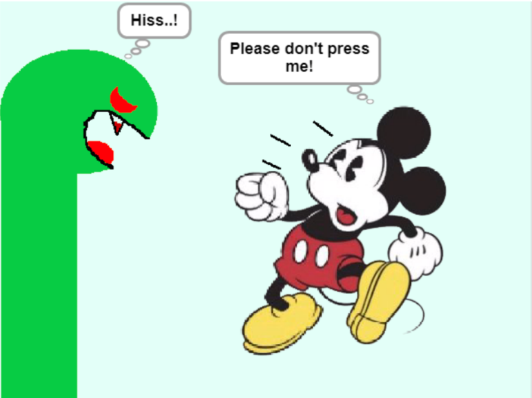
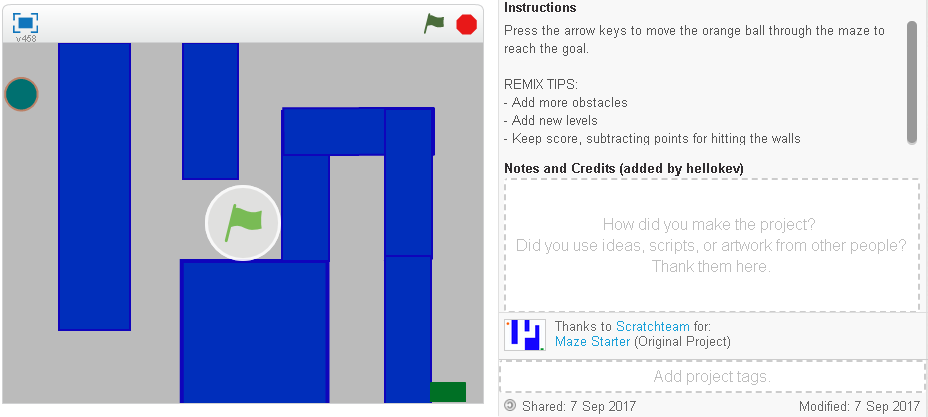
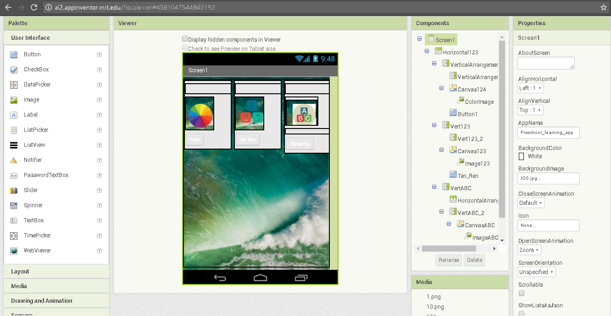
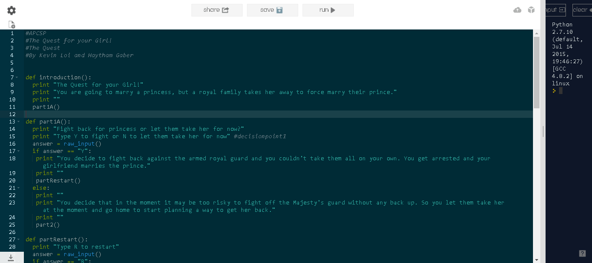

Me and my partners, Emily and Sean, created a version of Snake using Scratch. Use the arrow keys to move and try to eat the mouse! If you touch yourself, then you lose! This game was fairly difficult to make. The trial and error through this project like trying to make the snake grow as it eats the mouse was a pain. But now, it is complete and ready for users to play! Press the image to go to Scratch, and you will be able to play this game!
Me and my partners, Emily and Sean, created a remix of Maze using Scratch. Use the arrow keys to move, and make it to the end and try now to get stuck in the maze while it warps! This project was really nice to remix. As it opened our imagination for Scratch and able to use for future projects. Maze was a good starter because of its simplistic design and an easy game to play. Press the image to go to scratch, and you will be able to play this game!
Me and my partner, Stephen Duan, created a Preschool gaming app using appinventor. This app contains 1 drawing app called Paint and two gaming apps called Ten Ren and Alphapong. This application was designed for preschoolers or those who just can't really count or know the alphabet just yet. The drawing app is mainly for children to open up their creativity to limitless things. We know that kids may not have a really good education or they are struggling so this app is for them! Press the image to download the .aia file and run it in appinventor!
Me and my partner, Haytham Gaber, coded this story game in repl.it called 'The Quest for your Girl!' The objective of this game is to answer whatever obstacle comes to you and make sure you answer it correctly, or else you'll need to start over. Your girlfriend is taken by this royal family to marry their prince and your job is to get her back. This game was created using the python codes print, def, and other commands that helped it. Press the image to go to the link!
